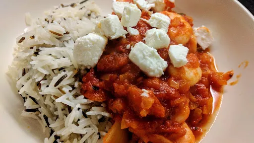

Prawns with tomato & feta
20 mins
Serves 4

Ingredients
-
2
tbsp olive oil
-
2
onions, finely chopped
-
2x 400 g cans chopped tomatoes
- pinch of sugar
-
350
g large cooked peeled prawns
-
100
g feta
- rice or pasta , to serve
-
3
tbsp chopped parsley leaves
Instructions
- Heat the oil in a frying pan, add the onions and fry gently for about 7 minutes
until softened and light brown. Add the tomatoes and sugar, and simmer for 5 minutes
.
- Throw in the prawns, season and cook gently for 5 minutes
until they are thoroughly hot.
- Serve the prawns spooned over some rice or pasta. Crumble over the feta and sprinkle with chopped parsley.
-
kcal
186
-
fat
6 g
-
saturates
3 g
-
carbs
11 g
-
sugar
9 g
-
fibre
3 g
-
protein
22 g
-
salt
1.54 g
BBC Good Food: Low-fat Feasts
Short Link
Long Link